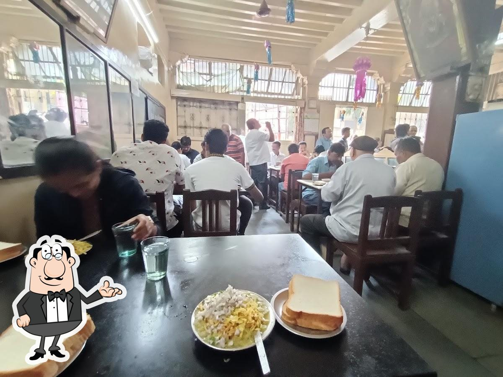
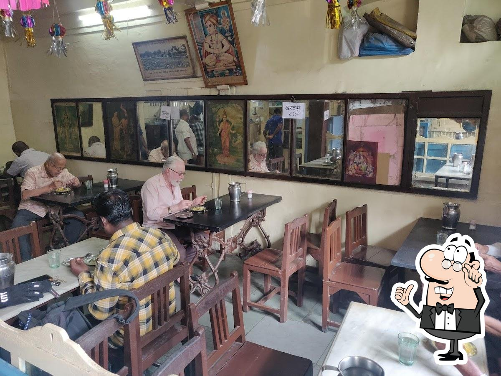

.jpg)
Est. 1910 · Budhwar Peth, Pune
वैद्य उपाहार गृह Vaidya Upahar Gruha
Pune's most beloved heritage eatery — serving authentic
Green Curry Misal Pav for over 115 years
Pune's most beloved heritage eatery — serving authentic
Green Curry Misal Pav for over 115 years
.jpg)

Atlas Obscura · Indian Express · Sahapedia
Founded by Raghunath Ramchandra Vaidya, who migrated from the Konkan coast to Pune, this humble eatery began as a hearty breakfast spot for traders in the Raviwar Peth jewellery market.
Over a century later, the fourth and fifth generations of the Vaidya family carry forward the same treasured recipes — unchanged since the 1960s. The wooden furniture, the old-world atmosphere, and most importantly, the taste — nothing has changed.
What makes us unique? Our signature green-curry misal — made with fresh green chillies, ginger, garlic, and turmeric. A Konkan recipe that was soothing against coughs and colds, now Pune's most iconic breakfast.
Fresh green chilli kat — a Konkan heritage recipe unlike any other misal in Pune
Matki usal, homemade sev & farsan, batata bhaji, kharwas — all made fresh daily
The Vaidya family still runs the kitchen with the same love and pride since 1910
Simple, authentic, made fresh every morning. We often sell out — arrive early!
.jpg)
Photographs that tell a 115-year-old story
.jpg)
.jpg)
.jpg)

Based on 1,600+ reviews
"If you want to taste a different misal you must visit this place. They serve yellow-green gravy similar to a Konkani fresh coconut masala preparation — very tasty. Must visit once!"
"This green curry misal is different than other misals. Potato, green chivda, big sev — served with bread slices. Definitely give it a try. Recommended: Batata Bhaji, Kharwas, Misal Pav, Sheera."
"A 115-year-old institution. The green misal here is unlike anything else. Walking in feels like stepping back into Pune's golden era. This place deserves every bit of its legendary status."
"Food is absolutely fresh, prices are very reasonable. The wooden furniture and old paintings make you feel the history. A hidden gem of old Pune that every foodie must experience."
No reservations needed. No fancy decor. Just come hungry and leave happy — the same way Pune has done it since 1910.
Budhwar Peth, Near Raviwar Peth Jewellery Market,
Pune
– 411 002, Maharashtra, India
Open Mon–Fri, Sun: 7:30 AM – 11:30 AM
Afternoon: 3:00 PM – 7:00 PM
⚠️ Closed every Saturday
Full breakfast under ₹80–120 per person. Cash preferred.
Free street parking nearby. Best reached by auto-rickshaw or two-wheeler.
Budhwar Peth, Pune · Est. 1910